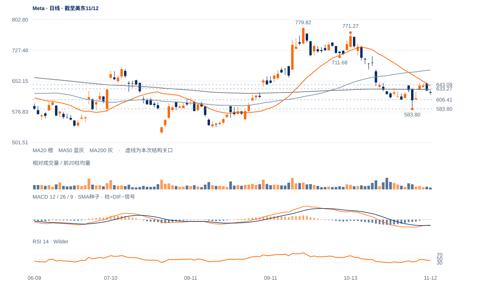

上窗口失去隔离
9日上缺口625.60—630.00，12日低618.92已完全回补，收623.61也低于缺口下沿；与苹果的旧支持尚守不是同一状态。
未来1—5日仍偏向修复失败后的回测，606—610承接更重要；1—3周需重新收回633.27—648.45才有明显改善。

查看大图 ↗9日上缺口625.60—630.00，12日低618.92已完全回补，收623.61也低于缺口下沿；与苹果的旧支持尚守不是同一状态。
现价低于原633.27受损线及200日线631.25，20日线640.44也在上方。11日高648.45后弱收628.77，12日继续下收。
12日量比仅0.42，但20日跌15.35%、OBV方向余额约-0.357；需求缺乏也能产生缩量下跌，须观察606.41—610.15附近实际跟进。
最新跌幅和成交量同时收缩，583.80原波谷仍在；若低位拒跌并回到633.27之上，当前弱势回测应降权。